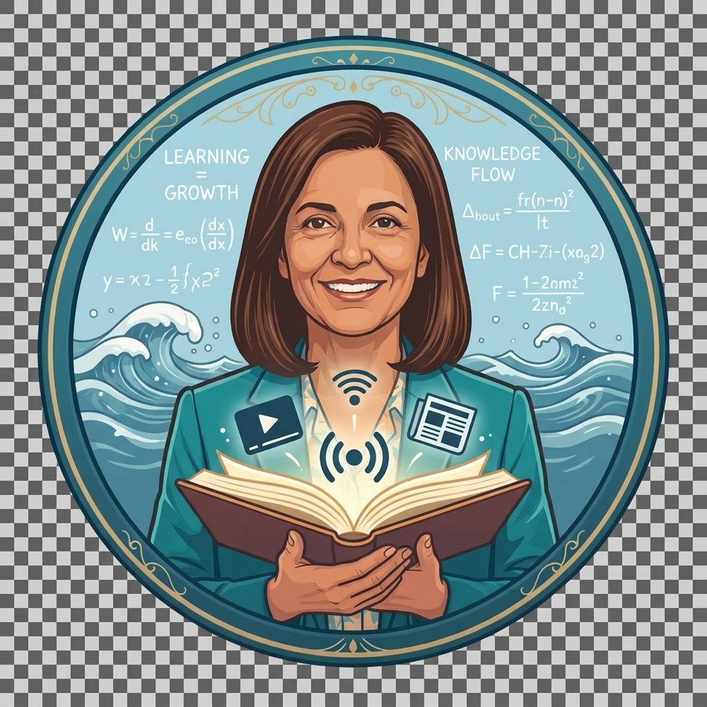
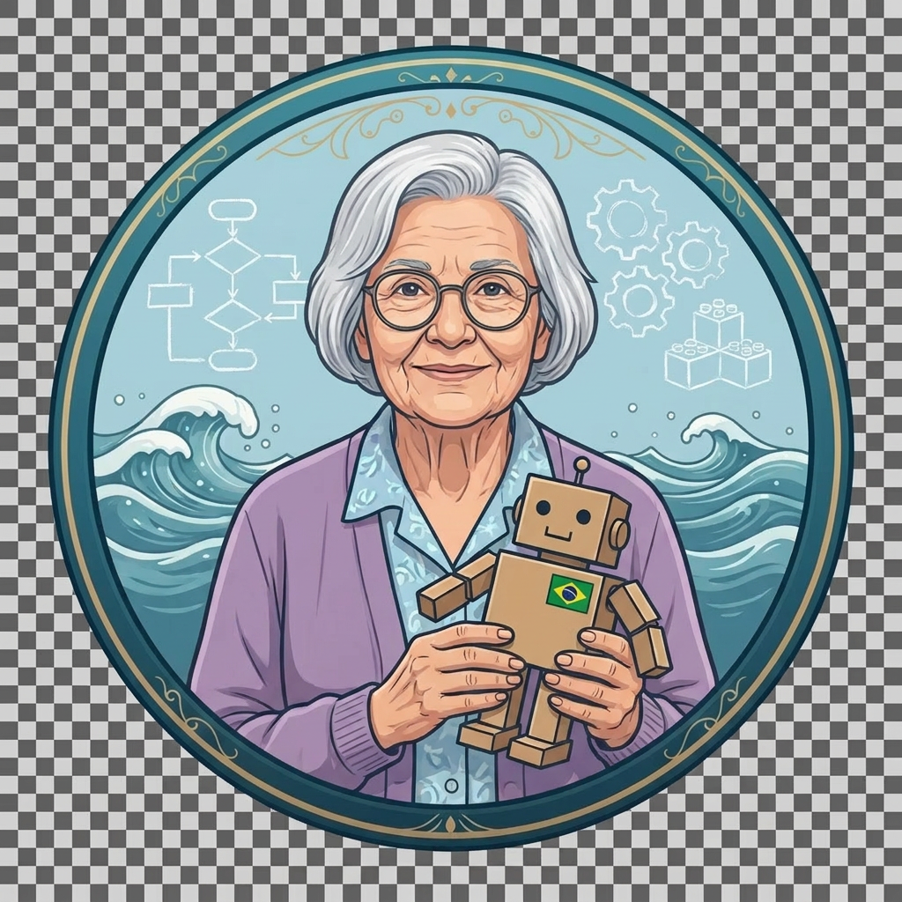

👩🏫 Escolha sua Mentora
Personas ilustradas inspiradas na obra de cinco pesquisadoras brasileiras da Educação e Tecnologia — uma homenagem, não uma representação.

Guardiã dos Saberes Digitais
Inspirada em Vani Moreira Kenski — tecnologias, mídias e educação aberta.
Ilha 1 · Sala de Aula Invertida
Guardiã do Pensamento Computacional
Homenagem a Léa Fagundes (in memoriam) — pioneira da informática na educação.
Ilha 2 · PBLGuardião da Informática na Educação
Inspirado em José Armando Valente (Unicamp) — computação e aprendizagem crítica.
Ilha 2 · PBLGuardiã das Metodologias Ativas
Inspirada em Lílian Bacich — ensino híbrido e personalização.
Ilha 3 · Rotação por EstaçõesGuardiã da Cibercultura
Inspirada em Edméa Santos — cibercultura e docência online.
Ilha 4 · Maker / Peer InstructionGuardiã da IA Ética
Inspirada em Lúcia Santaella — semiótica, cultura digital e IA.
Ilha 4 · Criação com IAG🗺️ O Arquipélago da Cultura Digital
Complete as missões de cada ilha para acumular XP e desbloquear a próxima. Clique em uma ilha para abrir suas videoaulas.
🏅 Galeria de Badges
Suas conquistas nesta jornada. Complete todos os vídeos de uma ilha para ganhar seu badge.
Pronto para zarpar?
Cada videoaula vale XP — e suas anotações Cornell ficam salvas no seu caderno digital.
🎥 Abrir a videoteca